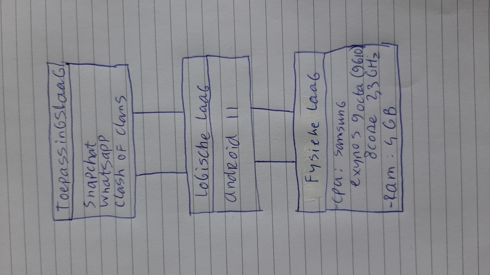
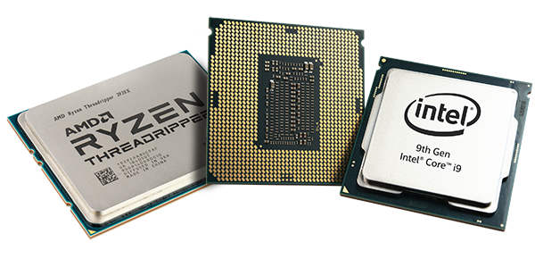

daniel's super site
De Fysieke Laag
Home
Lagen van een systeem
Fysieke laag
Logische laag
toepassingslaag
Fysieke laag: Specifiek onderwerp Moederbord, bus Processor, kloksnelheid, verwerkingssnelheid Geheugen: RAM, ROM, permanent Randapparatuur iets over cpu's, ??  